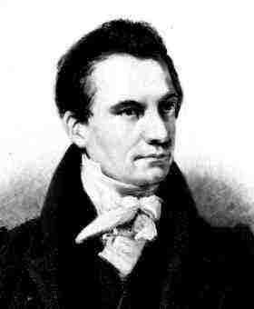
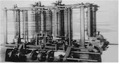

STONEHILL COLLEGE
COMPUTER SCIENCE
| CS Homepage |
| CS Major |
| CS Minor |
| Computer Engineering |
| CS Courses |
| Fall Courses |
| Spring Courses |
| Faculty |
| FAQ |
| ACM Student Chapter |
| Stanger Lab |
| Internships |
| NSF Java Workshop |
Stonehill College 320 Washington Street North Easton, MA 02357 |
|
 Charles Babbage 1791-1871 |
 Babbage's Analytical Engine |
100 Level CSC 101 From Gutenberg to Gates |
200 LevelCSC 201 Discrete Mathematics I |
300 LevelCSC 304 Computer Architecture |
400 LevelCSC 400 Computer Science Capstone |
| Code | Course Description | Level |
|---|---|---|
| CSC 101 | FROM GUTENBERG TO GATES This course explores the history of technology and its impact on our society. It provides students with the background to understand these changes and the tools they need to manage them, as well as a strong foundation in research, critical thinking, and oral and written communication skills. Prerequisites: none. |
100 |
| CSC 102 | INTRODUCTION TO PROGRAMMING An introduction to computers, programming and problem solving using a modern programming language such as Python, Java, or Visual Basic. Fulfills: Natural Scientific Inquiry requirement. Prerequisites: none. |
100 |
| CSC 103 | COMPUTER SCIENCE I An introduction to programming and problem solving using Java. Topics include: Input and Output; Selection; Repetition; Methods; Recursion; Arrays; Classes and Objects Prerequisites: none. |
100 |
| CSC 104 | COMPUTER SCIENCE II Inheritance; Polymorphism; Exceptions; Stream IO; Elementary Data Structures; Graphics; Event Driven Programming. Prerequisites: CSC 103. |
100 |
| CSC 195 | HOW COMPUTERS WORK An exploration of how computers work: what goes on inside the computer (hardware), how to program computers (software), the Internet and communication revolution, artificial intelligence and the limits of computation. Prerequisites: none. |
100 |
| CSC 201-202 | DISCRETE MATHEMATICS FOR COMPUTER SCIENCE I AND II Discrete mathematical methods for applications in computer science. Mathematical induction, graphs, trees, sets, equivalence relations, functions, and partially ordered sets. Asymptotic complexity, Big-O, and Big Omega, recursion and recurrence equations, finite and infinite sums. Predicate logic and first order logic. Basic counting methods, simple combinatorics. Probability and Markov Chains. Linear algebra, applications of linear algebra in computer science. Prerequisites: none. |
200 |
| LC 207 | MATHEMATICAL EXPERIMENTS IN COMPUTER SCIENCE This Learning Community course focuses on the delicate balance between theory and practice in computer science, revealing the dual and sometimes contradictory nature of computer science as both an engineering and a mathematical discipline. This course is an integrative seminar for Discrete Mathematic for Computer Science and Data Structures. Co-requisites: Discrete Mathematics and Data Structures. |
200 |
| CSC 211 | DATA STRUCTURES Stacks, queues, linked lists, trees, graphs, searching, and sorting. Design and analysis of algorithms. |
200 |
| CSC 221 | COMPUTER LOGIC AND ORGANIZATION Binary number systems, information representation, Boolean algebra, gates and digital circuit design, timing and control , memory, designing a simple computer, software simulation. |
200 |
| CSC 311 | ALGORITHMS AND COMPLEXITY Basic algorithm techniques: recursion, dynamic programming, greedy method branch and bound. Analysis of algorithms: recurrence equations, NP-completeness, asymptotic complexity. Applications include graph and combinatorial algorithms. |
300 |
| CSC 312 | COMPILER DESIGN Finite automata and lexical analysis, context free grammars, top down and bottom up parsing, syntax directed translation, symbol table techniques, runtime storage administration, code generation, optimization. |
300 |
| CSC 314 | OPERATING SYSTEMS Focuses on the fundamentals of operating systems including: processes, deadlocks, memory management, I/O, and file systems. After a thorough grounding in these basics, students will explore distributed/multiprocessor computing. Security and computer networks are also covered. Lectures in class will be reinforced with programming assignments using the Linux operating system. |
300 |
| CSC 323 | PROGRAMMING LANGUAGES Formal language concepts including syntax and basic characteristics of grammars. Control structures, data flow, run-time considerations. Interpretative languages. |
300 |
| CSC 324 | ADVANCED PROGRAMMING Programming for the world wide web. Design patterns. Presentation Layer: XHTML, CSS, Javascript. Processing Layer: XSLT, Servlet Frameworks. Data Layer: XML, Document Object Model. |
300 |
| CSC 325 | DATABASE MANAGEMENT SYSTEMS This course focuses on the basic principles of Database Management Systems. Students learn why databases are important to the information age. Data Modeling is taught using Entity Relationship diagrams. These data models are then translated into Relational schemas as students learn about Relational Algebra, Calculus, and Relational Database Systems. Practical experience is gained through projects using the commercial RDBMS ORACLE. Students learn SQL (both DDL and DML), database administration, and how to create complete database applications. The course will culminate in a major programming project that demonstrates proficiency in modern database technology. |
300 |
| CSC 382 | ARTIFICIAL INTELLIGENCE Knowledge representation. Natural language processing. Deduction and inference. Expert Systems. Computer vision. Robotics. Programming in LISP, PROLOG, or another AI language. |
300 |
| CSC 384 | THEORY OF COMPUTATION Introduction to the general theory of computation. Formal grammars: regular, context-free, and context-sensitive languages. Formal automata: finite-state and pushdown models. Decidability. Parsing. Turing theory. The Chomsky hierarchy. Also listed as MA 384. |
300 |
| CSC 390 | DATA NETWORKING Data communications system components, network architectures, layered protocols, traffic analysis and capacity planning. |
300 |
| CSC 393 | NUMERICAL ANALYSIS Both theoretical and practical problems in the computational aspects of mathematics: approximation of functions, numerical differentiation, solutions to algebraic and differential equations; topiCSC in linear algebra. Also listed as MA 393. |
300 |
| CSC 399 | TOPICS IN COMPUTER SCIENCE Various advanced topics in Computer Science. |
300 |
| CSC 400 | COMPUTER SCIENCE CAPSTONE Large-scale software project involving teamwork, written reports, and oral presentations. |
400 |
| CSC 475 | INTERNSHIP IN COMPUTER SCIENCE Opportunity for the qualified student to work in the computer industry under professional supervision. |
400 |
| CSC 490 | DIRECTED STUDY IN COMPUTER SCIENCE Opportunity for upper level students to advanced work in a specialized area of computer science. |
400 |
Validate Page by Clicking on this image: